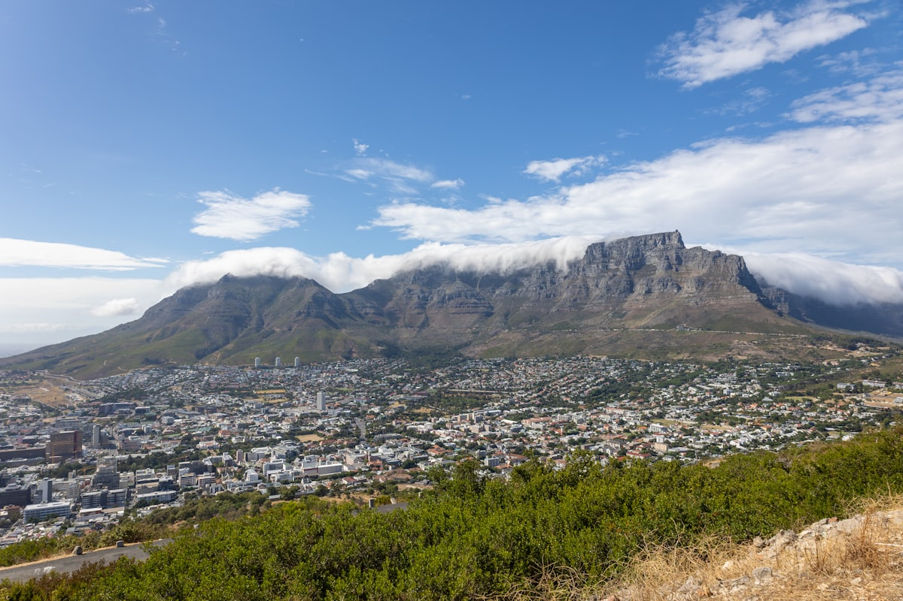
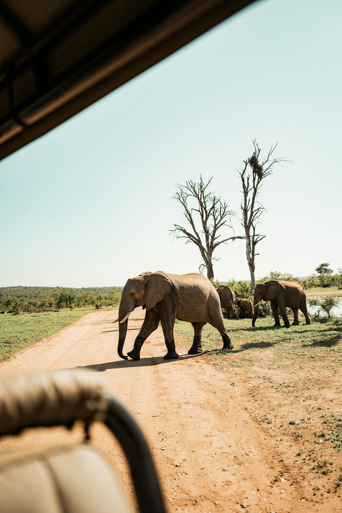
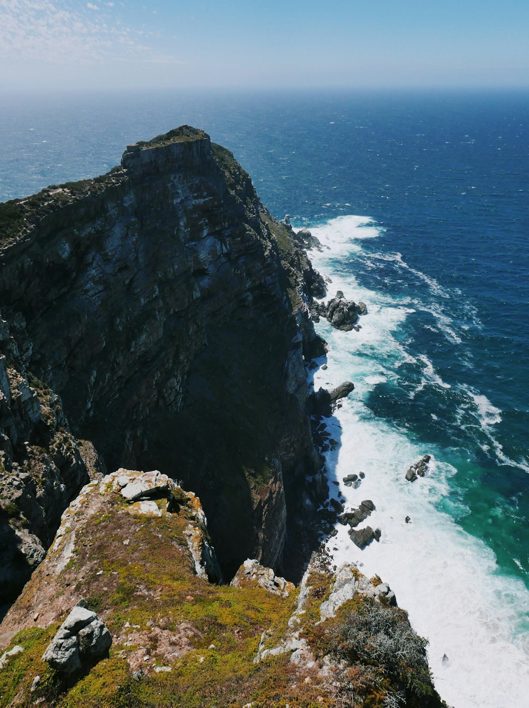
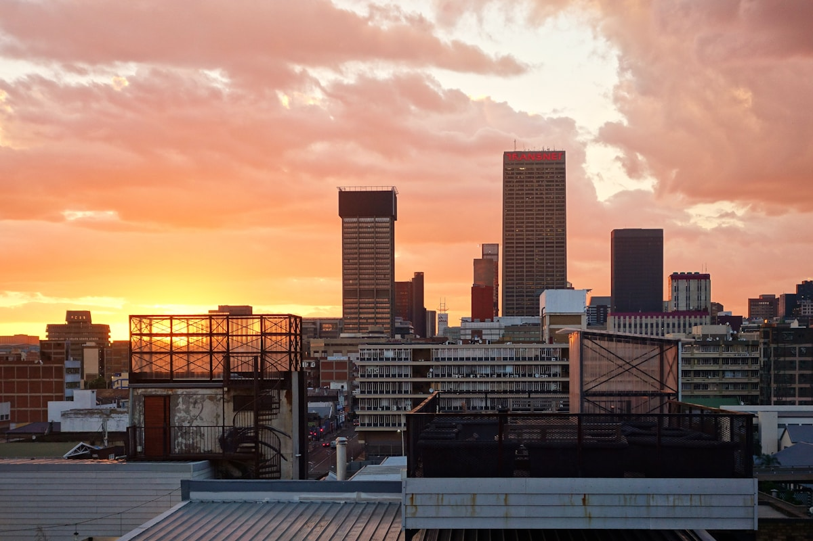
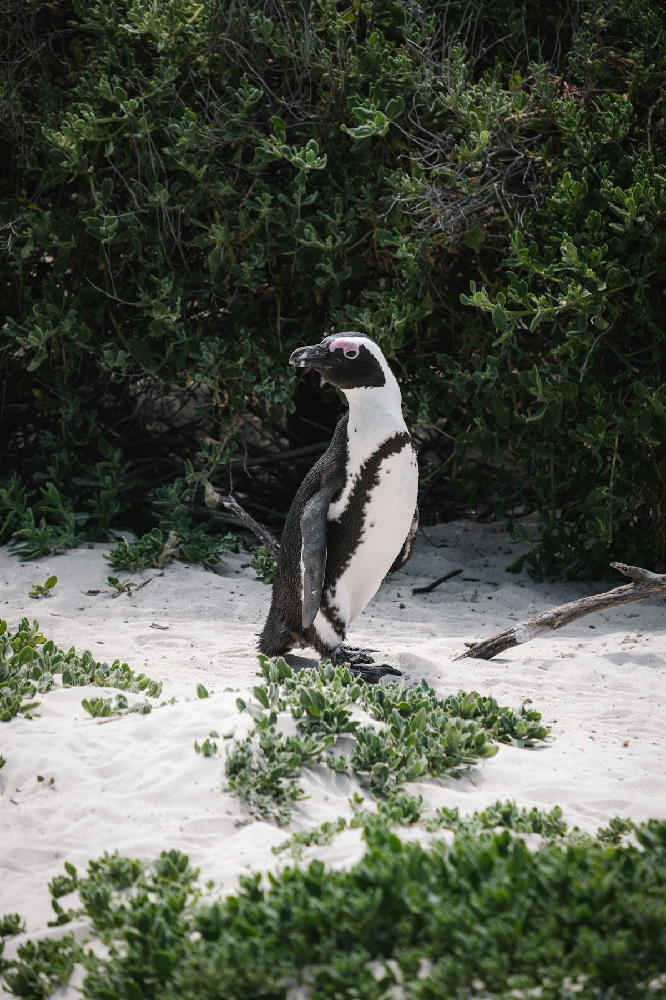
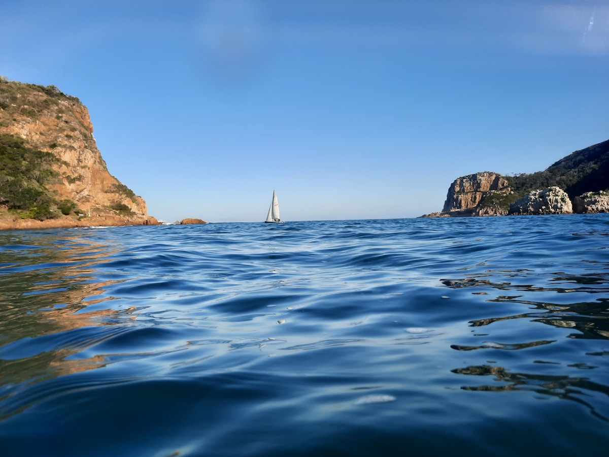
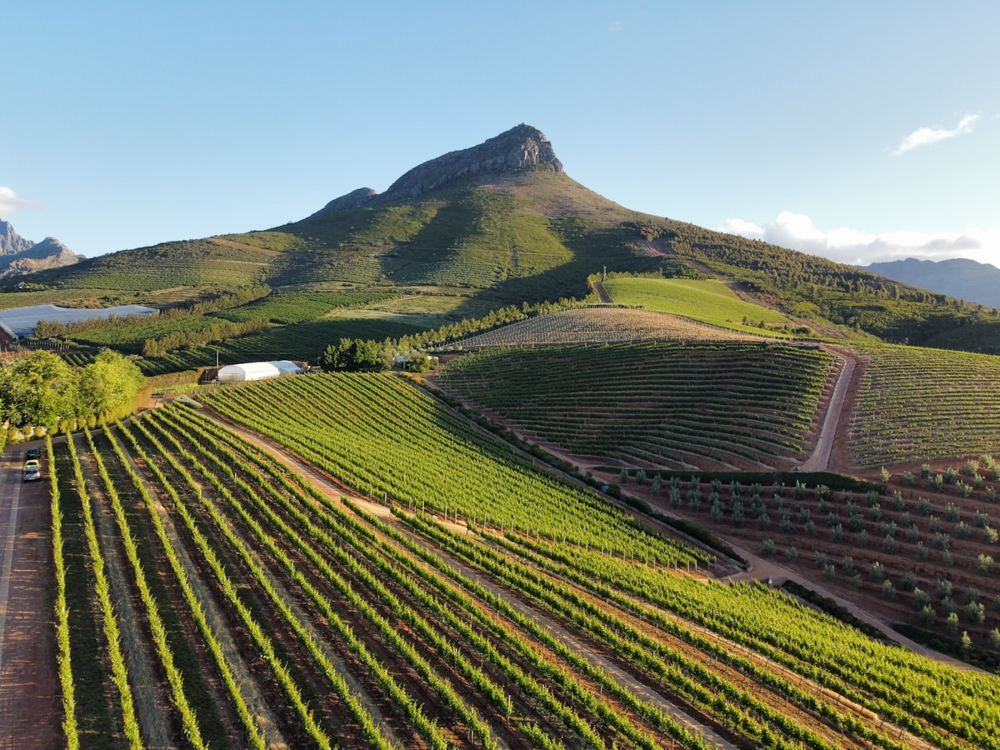
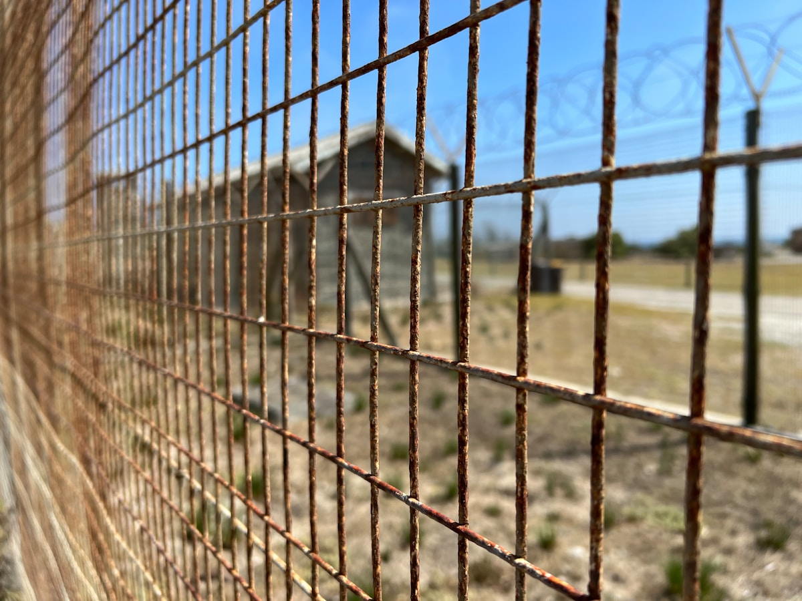

| 事项 | 结论 |
|---|---|
| 事项 | 结论 |
| 签证（最关键） | 中国护照需签证：2025 年 10 月起南非对中国大陆护照开放 ETA 电子授权（eta.dha.gov.za 在线申请，无需面签，材料齐全约 10 个工作日出签，单次停留最长 90 天） |
| 推荐方案 | 约堡 2 天 + 克鲁格 3 天猎游 + 开普敦 4 天 + 好望角 2 天 + 花园大道 3 天 + 返程 2 天 |
| 返程约束 | D15 傍晚从伊丽莎白港/开普敦飞回约堡，D16 约堡✈北京；返程国航经停深圳约 15h+ |
| 行程链 | 约翰内斯堡 → 克鲁格 → 开普敦 → 好望角 → 花园大道 → 返程 |
| 预算（人均） | 经济 18000–28000 ／ 标准 35000–50000 ／ 舒适 70000–100000（人民币） |
| 三件提前事 | ① 办 ETA ② 订克鲁格园区住宿与 game drive ③ 订约堡⇄开普敦内陆机票与租车 |
| 季节提醒 | 10–4 月（南半球春夏秋）最宜；6–8 月冬天气温低但动物多、观鲸季开始；11 月—3 月野花与观鲸季 |
| 支付 | 刷卡普及（Visa/Master），随身备 1000–2000 兰特现金用于小费与路边摊 |
以下为 16 天 15 晚的推荐节奏：东北段约堡+克鲁格以猎游为主，中段开普敦城市+半岛慢逛，最后 3 天花园大道自驾一路向东。每日主景点 ≤2 个，克鲁格园区内节奏跟着日出日落走。
| 日期 | 行程 | 过夜地 | 主题 |
|---|---|---|---|
| D1 抵达约翰内斯堡 | 北京✈约堡（经停深圳约 15h+），入住桑顿商务区，休整 | 约翰内斯堡 | 抵达+休整 |
| D2 | 先民纪念馆 → 宪法山 → 曼德拉故居/索韦托（可选） | 约翰内斯堡 | 彩虹之国史 |
| D3 | 约堡→克鲁格：途中风景大道、布莱德河峡谷、上帝之窗 | 克鲁格 | 进草原 |
| D4 | 克鲁格全天猎游：清晨+傍晚 game drive，看 Big Five | 克鲁格 | 猎游日1 |
| D5 | 克鲁格全天：自驾或敞篷车，观鸟与夜行动物 | 克鲁格 | 猎游日2 |
| D6 | 克鲁格→约堡✈开普敦（约 2h），傍晚 V&A 海滨 | 开普敦 | 飞向母城 |
| D7 | 桌山缆车（475 兰特）→ Bo-Kaap 马来区 → 长街 | 开普敦 | 桌山日 |
| D8 | 罗本岛（600 兰特）→ 康斯坦博斯植物园 | 开普敦 | 岛屿与花园 |
| D9 | 豪特湾海豹岛游船 → 十二门徒峰 → 开普敦市区老街 | 开普敦 | 半岛预热 |
| D10 | 斯泰伦博斯/法兰舒克葡萄酒庄园一日（品酒） | 开普敦 | 酒乡日 |
| D11 | 好望角：开普角灯塔 → 马卡苏角 → 博尔德斯企鹅滩 | 开普敦 | 两大洋交汇 |
| D12 | 好望角补充日：查普曼峰公路 → 半岛海滩 → 天气机动 | 开普敦 | 半岛深度 |
| D13 | 开普敦→赫曼努斯（观鲸）→ 摩梭湾（邮政树） | 摩梭湾 | 花园大道1 |
| D14 | 摩梭湾→克尼斯纳（环礁湖游船）→ 齐齐卡马 | 齐齐卡马 | 花园大道2 |
| D15 | 布洛克兰斯桥蹦极（可选）→ 普利登堡湾 → 伊丽莎白港✈约堡 | 约翰内斯堡 | 花园大道3 |
| D16 返程 | 约堡✈北京（国航经停深圳约 15h+），入境到家 | — | 收尾 |
以下为 16 天全程的逐小时执行时间线，可当作「当天打开照着走」的清单。标注 ※ 的可选项视体力与天气取舍。
| 时间 | 事项 |
|---|---|
| 全天 | 北京✈约翰内斯堡（国航 CA867 经停深圳，全程约 15h+；或转机迪拜/多哈约 17–24h） |
| 20:00–21:30 | 入境（ETA 电子授权需提前办妥，打印纸质件备用），取行李打车到桑顿 Sandton 商务区入住 |
| 21:30 | 酒店周边便利店补给（水、零食），早睡倒时差（-6h） |
| 时间 | 事项 |
|---|---|
| 09:00–11:30 | 先民纪念馆 Voortrekker Monument（成人约 100 兰特）：荷兰裔拓荒者历史纪念碑，方形花岗岩建筑可登顶看约堡全景 |
| 11:30–13:00 | 午餐：纪念馆附近或回桑顿 Mall 吃南非烤肉 Braai |
| 13:30–15:30 | 宪法山 Constitutional Hill（约 80 兰特）：旧监狱改建的宪法法院，曼德拉与甘地都曾被关押于此，南非转型史一课 |
| 16:00–18:00 | 自由选择：索韦托 Soweto 半日（曼德拉故居 Vilakazi 街，约 60 兰特，建议包 Uber 司机陪同）或桑顿 Nelson Mandela Square 闲逛 |
| 19:00 | 晚餐：桑顿 MABONENG 街区，南非特色烤肉+葡萄酒 |
| 时间 | 事项 |
|---|---|
| 08:00 | 约堡出发，自驾/包车前往克鲁格国家公园（约 5–6h，中途走 Panorama Route） |
| 10:30–11:30 | 布莱德河峡谷 Blyde River Canyon（免费观景）：世界第三大峡谷，上帝之窗（God's Window）俯瞰低草原 |
| 11:30–13:00 | 沿途柏林瀑布、博克好运穴，午餐峡谷观景台 |
| 15:00 | 抵达克鲁格南门（如 Paul Kruger Gate），入住园区内营地（SANParks）或园外酒店 |
| 16:00–18:00 | 傍晚园内短途巡游热身：大象、长颈鹿、羚羊高频出没 |
| 18:30 | 营地晚餐，克鲁格星空 |
| 时间 | 事项 |
|---|---|
| 05:30–08:00 | 清晨 game drive：日出前出车，狮子/花豹清晨最活跃，也是摄影黄金时段（自备望远镜） |
| 08:00–09:00 | 营地早餐，回房休息充电 |
| 09:30–11:30 | 白天自驾巡游：大象、犀牛、水牛多在荫凉处，注意路边树梢找豹 |
| 11:30–15:00 | 营地午餐+午休（正午动物趴窝，是休息好时段） |
| 15:30–18:00 | 傍晚 game drive：日落前动物进入饮水点，长颈鹿/斑马/狮群高频 |
| 19:00 | 营地晚餐；可自费报名夜巡（观察夜行动物） |
| 时间 | 事项 |
|---|---|
| 06:00–09:00 | 清晨 game drive：换一条线路（如南部 S1/S3 环线），看花豹与犀牛 |
| 09:00–10:30 | 营地早午餐 |
| 10:30–13:00 | 白天机动：可选私人保护区敞篷车团（半天约 1200–2500 兰特，向导带专业追踪）或沿 Sabie 河自驾看河马鳄鱼 |
| 13:00–15:00 | 营地午餐午休 |
| 15:30–18:00 | 傍晚最后一次巡游：克鲁格看 Big Five 完美收官 |
| 18:30 | 晚餐：营地烤肉（Braai 套餐），宿克鲁格 |
| 时间 | 事项 |
|---|---|
| 06:00–09:00 | 克鲁格北门出发回约堡（约 4h，或从霍德斯普鲁特机场 HDS 直飞约堡 45 分钟） |
| 09:00–11:30 | 还车/转机，约堡奥坦博机场国内航站楼候机 |
| 11:30–14:00 | 约堡✈开普敦（约 2h，FlySafair/南非航空，提前订约 400–700 元） |
| 14:30 | 抵达开普敦机场（CPT），Uber 到市区酒店 |
| 15:30–18:00 | V&A 码头 Waterfront（免费）：海滨购物区+码头看桌山倒影，南非最安全繁华的商圈 |
| 18:30 | 晚餐：V&A 市场（The Old Biscuit Mill/美食市场），生蚝+南非葡萄酒 |
| 时间 | 事项 |
|---|---|
| 08:30 | 乘桌山缆车上山（线上往返 R475/现场 R530，建议提前在官网买好）：360° 旋转缆车约 5 分钟到海拔 1067m 山顶 |
| 09:00–11:00 | 桌山顶徒步（免费）：山顶平整如桌面，绕 Plateau 步道看开普敦城、桌湾与远处好望角 |
| 11:00–12:30 | 山顶咖啡+拍照，若遇「桌布云」覆盖山顶正是最美时刻 |
| 13:00–14:30 | 下山，午餐：Kloof 街/长街餐厅 |
| 15:00–17:00 | Bo-Kaap 马来区（免费）：彩虹色联排房屋，开普马来文化街区，最适合街拍 |
| 18:00 | 晚餐：V&A 码头海滨餐厅，看日落 |
| 时间 | 事项 |
|---|---|
| 08:30–13:00 | 罗本岛 Robben Island（国际成人约 R600，含渡轮+导览，务必提前 1–2 周官网订票）：从 V&A 码头乘渡轮 30 分钟登岛，参观曼德拉被囚 18 年的监狱与石灰岩采石场 |
| 13:00–14:00 | 午餐：V&A 码头或水上市场 |
| 14:30–17:00 | 康斯坦博斯植物园 Kirstenbosch（约 R220）：桌山山脚下的南非国花天堂，尤以「树冠步道 Canopy Walkway」与 protea 帝王花出名 |
| 17:30 | 返市区，晚餐：开普马来咖喱（Bobotie） |
| 时间 | 事项 |
|---|---|
| 09:00–10:00 | 驱车沿大西洋海岸线到豪特湾 Hout Bay |
| 10:00–11:30 | 海豹岛 Duiker Island 游船（约 R180–250/人，视天气）：成百上千海豹在礁石上晒太阳，全程 45 分钟 |
| 11:30–13:00 | 豪特湾海鲜午餐（龙虾/炸鱼薯条） |
| 13:00–15:00 | 十二门徒峰 Twelve Apostles（车览+观景点拍照）：桌山向大西洋延伸的十二座山峰 |
| 15:00–17:00 | 开普敦市区老街：长街 Long Street 彩色建筑、南非博物馆（可选）、圣乔治教堂外观 |
| 18:00 | 晚餐：City Bowl 意大利菜/烤肉 |
| 时间 | 事项 |
|---|---|
| 09:00 | 开普敦出发前往斯泰伦博斯 Stellenbosch（约 45 分钟），南非最古老大学城+荷兰式建筑 |
| 10:00–12:00 | 酒庄品酒：选 2 家老牌酒庄（如 Spier、Lanzerac），品酒套餐约 R60–150/人，含 5–7 款 |
| 12:00–13:30 | 酒庄午餐：庄园餐厅配酒，性价比极高 |
| 13:30–15:30 | 法兰舒克 Franschhoek（法国角）：法国胡格诺移民小镇，「南非美食之都」，街拍+甜品店 |
| 15:30–17:30 | 返程路经酒乡大道，山间葡萄园起伏如画，找观景点拍全景 |
| 18:00 | 返开普敦晚餐 |
| 时间 | 事项 |
|---|---|
| 08:30 | 开普敦出发沿半岛南线前往好望角自然保护区 Cape of Good Hope（在桌山国家公园内，含日保育费） |
| 09:30–12:00 | 开普角 Cape Point：乘 Funicular 小缆车（往返约 R85）或徒步上 238 米山顶，看大西洋与印度洋在眼前交汇，老灯塔+新灯塔经典机位 |
| 12:00–13:00 | 保护区入口咖啡/野餐 |
| 13:30–15:30 | 返程途中博尔德斯海滩 Boulders Beach（约 R190）：非洲企鹅栖息地，栈道上看企鹅群与碧蓝海湾 |
| 15:30–17:00 | 西蒙镇 Simon's Town海滨小镇散步，海军码头看军舰 |
| 18:30 | 返开普敦晚餐 |
| 时间 | 事项 |
|---|---|
| 09:00 | 豪特湾出发走查普曼峰公路 Chapman's Peak Drive（收费约 R60/车）：悬崖凿出的 9 公里沿海公路，180° 大西洋海景 |
| 10:30–12:00 | 诺德霍克海滩 Noordhoek 骑马/散步（可选），Kommetjie 海岸线 |
| 12:00–13:30 | 午餐：海边小镇炸鱼薯条 |
| 13:30–15:30 | 天气机动时间：若桌山此前因天气未成行，此段补桌山缆车；若已成行，去信号山/坎普斯湾海滩看城市全景 |
| 15:30–17:30 | 坎普斯湾 Camps Bay 海滩（免费）：南非最美海滨大道，白色沙滩+桌山背景 |
| 18:30 | 晚餐：坎普斯湾 Sunset 餐厅看日落 |
| 时间 | 事项 |
|---|---|
| 08:00 | 开普敦出发沿 N2 东行（全程自驾约 4.5h 分两天走） |
| 10:00–11:30 | 赫曼努斯 Hermanus（6–11 月观鲸季）：世界最佳陆地观鲸点，悬崖步道免费看南露脊鲸喷水拍尾，可自费出海观鲸（约 R1200） |
| 11:30–13:00 | 赫曼努斯午餐+漫步 |
| 14:00–15:00 | 阿古拉斯 Cape Agulhas（可选绕行）：非洲大陆最南端，两大洋官方分界点，白色灯塔 |
| 15:30–17:00 | 抵达摩梭湾 Mossel Bay：看 1488 年葡萄牙人登陆点、邮政树（Post Office Tree）、狄亚士航海博物馆（约 R50） |
| 18:00 | 入住摩梭湾，海边晚餐 |
| 时间 | 事项 |
|---|---|
| 08:30 | 摩梭湾出发前往克尼斯纳 Knysna（约 1h） |
| 09:30–12:00 | 克尼斯纳环礁湖：乘船游泻湖（约 R300/人，含海岬 Head 观景），看两大岬角与泻湖，生蚝码头 |
| 12:00–13:30 | 午餐：克尼斯纳码头生蚝（南非生蚝之乡，半打约 R120–180） |
| 13:30–14:30 | 车览普利登堡湾 Plettenberg Bay 方向海岸线，或去海豹礁观景台 |
| 15:00–17:30 | 齐齐卡马 Tsitsikamma 国家公园（日保育费约 R200）：风暴河口 Storms River 悬索桥徒步（约 1h 往返），看印度洋浪打峡谷 |
| 18:00 | 入住风暴河小镇森林小屋，晚餐 |
| 时间 | 事项 |
|---|---|
| 08:30 | 布洛克兰斯桥 Bloukrans Bridge（可选）：非洲最高蹦极，216 米，约 R1200 含证书；不敢蹦也有观景台看别人跳 |
| 10:00–11:30 | 普利登堡湾海滩+观景（若昨日未看） |
| 11:30–13:00 | 午餐：伊丽莎白港方向沿途小镇 |
| 14:00 | 抵达伊丽莎白港 Port Elizabeth，还车 |
| 16:00–18:00 | 伊丽莎白港✈约翰内斯堡（约 1h45，提前订票），入住机场附近酒店 |
| 19:00 | 晚餐：约堡机场酒店 |
| 时间 | 事项 |
|---|---|
| 08:00–10:00 | 酒店早餐，机场免税店补货：南非红酒（每人限带 2 瓶）、Biltong 肉干、博士茶 Rooibos、钻石/铂金饰品可选 |
| 11:00 | 值机安检，国航返京航班 |
| 13:00–次日 | 约翰内斯堡✈北京（经停深圳，全程约 15h+），入境到家 |
必去（必去）/ 顺路（顺路）/ 可跳过（可跳过）。

必去
必去
顺路
必去
必去
顺路
顺路图片为 Unsplash 主题图（桌山、克鲁格野生动物、好望角、企鹅滩、克尼斯纳环礁湖等均为南非实景），用于页面配图。更多免费看点：V&A 码头、Bo-Kaap 马来区、坎普斯湾海滩、信号山日落。
点击左侧节点可在地图上定位；点击地图 marker 会高亮对应节点。坐标为 WGS-84 转 GCJ-02 纠偏后标注。
以下为单人、不含购物的估算，人民币计价；出发地基准北京。汇率按 1 元 ≈ 2.6 南非兰特估算。往返机票按淡季国航经停深圳 4500–6000 元计；克鲁格园内营地比私密营地省一半以上。
| 项目 | 经济（18000–28000） | 标准（35000–50000） | 舒适（70000–100000） |
|---|---|---|---|
| 往返机票 | 北京⇄约堡 4500–6000 | 含约堡⇄开普敦内陆 7000–8500 | 商务/灵活 15000–22000 |
| 住宿（15 晚） | 青旅/民宿 200–350/晚 | 四星酒店 500–900/晚 | 野奢营地+五星 1500–3500/晚 |
| 交通（租车+内陆飞） | 租车自驾 4000–6000 | 包车+内陆飞 8000–12000 | 全程包车+头等 18000–28000 |
| 门票与活动 | 公园+缆车 1500–2500 | 含猎游/酒庄/观鲸 4000–6000 | 全含+私密营地+蹦极 10000–15000 |
| 餐饮（16 天） | 超市+简餐 1500–2500 | 正常下馆子 4000–6000 | 米其林+酒庄餐 10000–15000 |
6–11 月赫曼努斯必去（陆地免费观鲸+出海 R1200），克鲁格因旱季植被稀疏更易看到动物，是「低成本猎游」黄金期。可将开普敦减 1 天、赫曼努斯住 1 晚。冬季开普敦多雨，桌山缆车要留机动日。
带娃家庭选克鲁格园内营房自驾（营地有泳池与动物科普），跳过私密营地的长途敞篷车（颠簸且贵）；开普敦加桑公园（Boulders 企鹅、海豹岛孩子最爱）；花园大道可跳过蹦极改野生动物园/海豚馆。南非酒店普遍加床友好，租车务必配儿童座椅。
| 方式 | 时长 | 参考价 | 备注 |
|---|---|---|---|
| 直飞（推荐） | 北京✈约翰内斯堡约 15h（经停深圳） | 往返 4500–6000 元 | 国航 CA867，每周多班，旺季提前 2 个月订 |
| 转机 | 17–24h | 4000–5500 元 | 经迪拜/多哈/亚的斯亚贝巴/曼谷，班次多 |
| 内陆航班 | 约堡⇄开普敦约 2h | 往返 800–1500 元 | FlySafair/南非航空/英国航空，克鲁格可飞霍德斯普鲁特机场 |
| 区域 | 价格/晚 | 优点 | 短板 |
|---|---|---|---|
| 约翰内斯堡·桑顿/机场 | 经济 250–400 / 标准 500–900 | 商务区安全、机场近 | 市中心治安一般 |
| 克鲁格·园内营地/园外 | 经济 300–500 / 标准 800–1500 | 营地近动物、含餐可选 | 私密营地 4500 兰特起 |
| 开普敦·V&A/市区 | 经济 300–500 / 标准 600–1000 | 海滨繁华、景点步行可达 | 旺季周末房态紧张 |
| 斯泰伦博斯·酒庄区 | 标准 700–1400 | 庄园住宿、品酒方便 | 距开普敦约 45 分钟 |
| 克尼斯纳·环礁湖 | 标准 500–900 | 湖景民宿性价比高 | 圣诞季涨价明显 |
| 齐齐卡马·风暴河 | 标准 400–800 | 森林小木屋、紧邻公园 | 设施朴素、信号弱 |